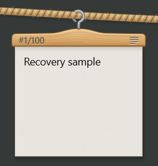

Working with cards
Double-click a Hanging card to recall it. Drag it off the rope to keep it on your desktop as a Floating card. Its double-click and close actions then change.
Hanging and Floating cards
Each new copy appears on the rope that is currently collecting. To keep a card on your desktop, drag the middle of its paper outside all rope rows and release. ClipRope saves it as a Floating card.


| Action | Hanging card | Floating card |
|---|---|---|
| Double-click the paper | Restore the contents to the clipboard, move the card to the front of its rope and hide the workspace. By default, ClipRope also sends a paste to the original destination if it is still available. | Edit text, open a file or screenshot, locate a folder or file group, or view card information, depending on the contents. |
| Drag | Reorder the card on its rope, or move it to another rope in overview. | Move the card on the desktop, or drop it into a gap on a rope. |
| Click × | Delete the card by default. On the system ReBin rope, × always deletes it immediately. | By default, move the card to the front of ReBin. Its window closes once the move is saved. |
Preview screenshots and open files
Screenshots. Hold the pointer over the middle of a screenshot for about half a second to see the full image. Move the pointer away to dismiss it. You can turn this off under Global settings → Cards → Screenshot hover preview.
Files. When you copy an image file in File Explorer, the card holds a reference to the original file. Double-click a Floating file card to open it in its default app. If the file has moved or been deleted, use Card information… to check its saved path.
Folders and file groups. Double-click a Floating card to locate its items in File Explorer. If the files are in different folders, choose which folder to view. Other saved content opens in Card information.
Edit text or start a quick note
Double-click a Floating text card to edit it. For a Hanging text card, right-click and choose Edit text…. Press Enter for a new line, Ctrl+S to save, or Esc to discard this edit. If saving fails, the draft stays open so you can try again.
Press Ctrl+Shift+Space anywhere to create a blank Floating quick note. Canceling the first edit leaves the blank card on your desktop.
Return a Floating card to a rope
Click Return at the upper left to put the card at the front of the rope that is collecting when you click. This works even with the workspace hidden. To choose a different rope or position, open overview and drag the card into the gap you want.
Floating cards survive a restart and take up no space on a rope. When you return one to a full rope, the last card on that rope is removed.
Recover a closed card from ReBin
- With the default settings, clicking × on a Floating card sends it to the front of ReBin, the system rope for recycled cards.
- Right-click a rope line or its wooden nameplate and use the ReBin menu option to show it. ReBin becomes the current collecting rope.
- Open overview and drag the card into a gap on the rope where you want it. ReBin has unlimited capacity. Clicking × on a card inside ReBin deletes it immediately.